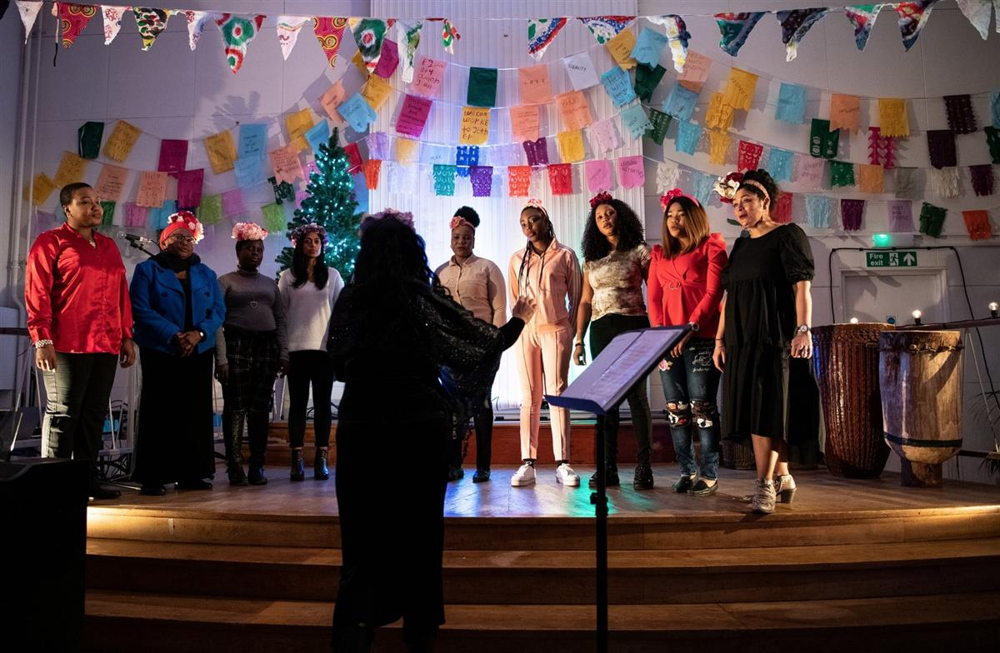
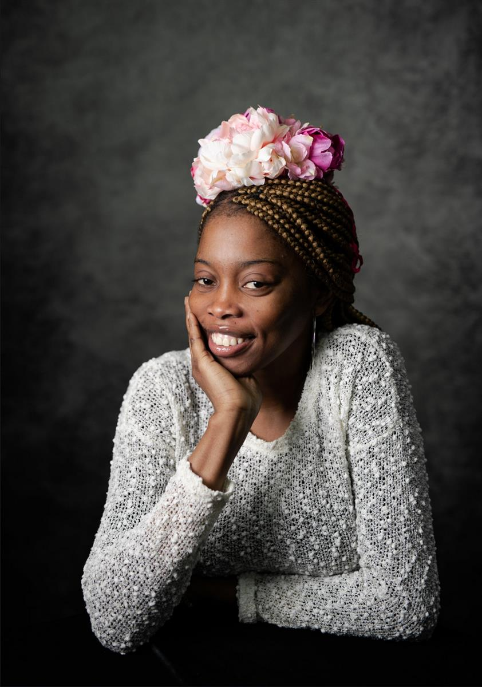
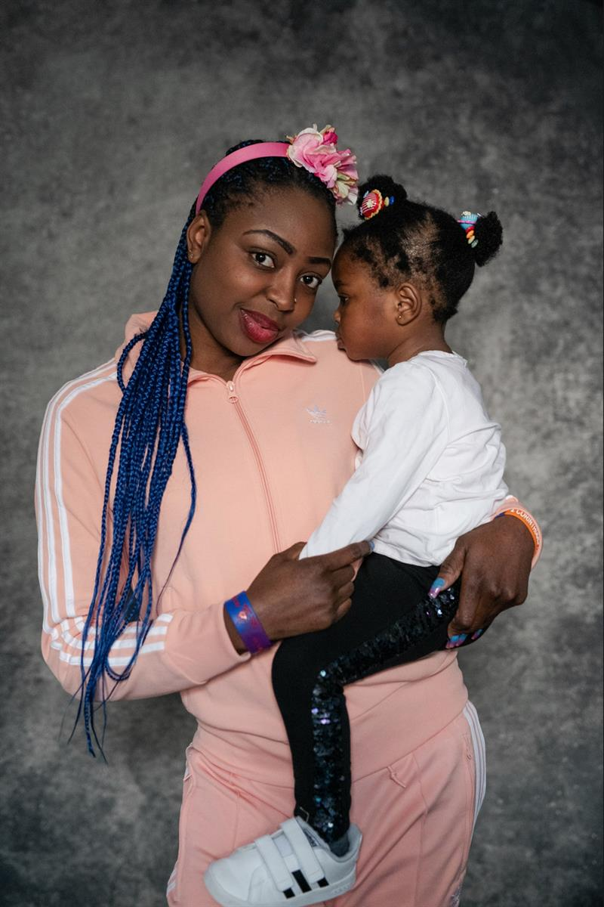
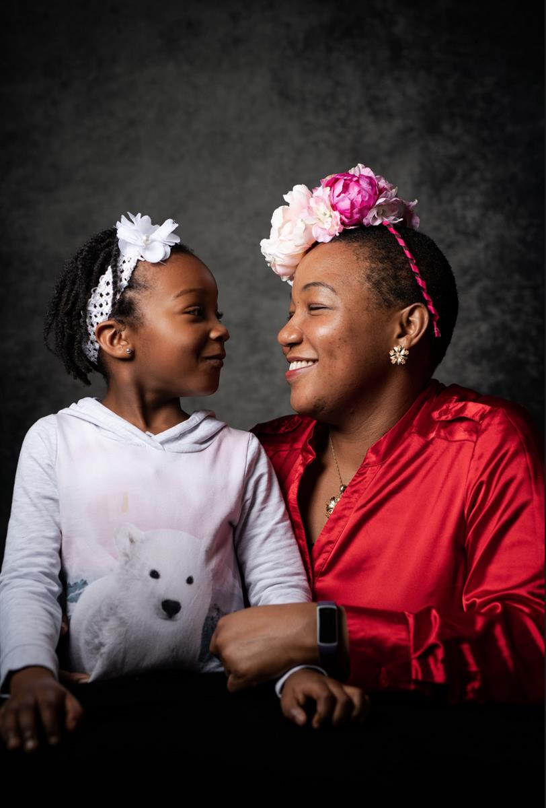
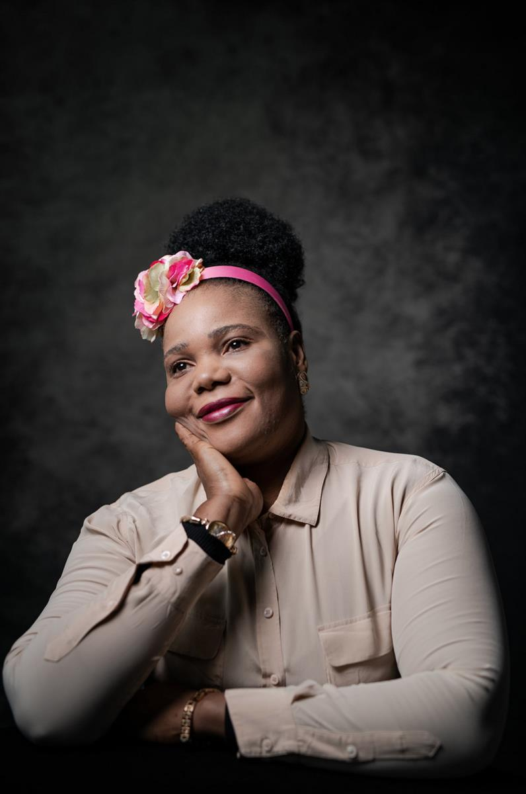
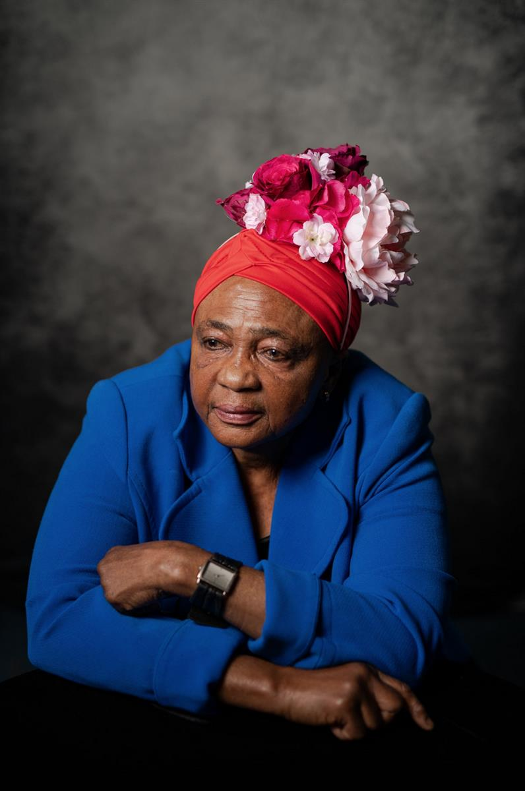

Adwoa Dickson (project director), Shamuna Rahman (choir support), Racheal Olawaniotogun, (choir member) Francesca Ojefua (choir support) and daughter, Anna Samant (facilitator)
A choral singing project is harnessing the power of music to help heal the mental and emotional scars of women trafficked into Britain
Photography by Alecsandra Dragoi
Trafficking in focus is supported by
Tue 17 Dec 2019 07.00 GMT Last modified on Tue 17 Dec 2019 15.35 GMT
In a large, festively decorated church just off London’s bustling Piccadilly Circus, a women’s choir prepares to sing in front of a lively, 400-strong crowd.
Their first song quietens the room and acts as an introduction. “We are Amie, beautiful and strong,” they sing a cappella, their floral headdresses complementing the reds, golds and greens of the Christmas trees behind them.
Each woman’s journey to this spot in the West End has been a long one.
The members of Amies Freedom Choir are all survivors of modern slavery, trafficked into the UK from the Caribbean, Africa, eastern Europe or south-east Asia. They are just some of the thousands of women brought to the UK to be forced into domestic labour or prostitution – a problem that continues to grow, according to a Salvation Army report that states there has been a 21% increase in the number of trafficking victims seeking support in 2019.

- Amies Freedom Choir perform in London, wearing headdresses made by Clea Broad
For the singers whose voices fill the vast church on a cold December evening, joining Amies – French for “female friends” – marked the end of one journey but the start of another.
Aside from physical injuries and the practical concerns of navigating the complex British immigration system, those who escape modern slavery often suffer from mental health issues including post-traumatic stress disorder, depression and anxiety.
“When they join they have difficulty standing up and saying their name out loud … they are terrified to do that,’’ says the conductor and project director, Adwoa Dickson.
The first thing they practise is saying their name to the group.
“They learn to say: ‘I am here, I am proud, and I own this space,’” says Dickson.
Alongside fellow co-founder Annabel Rook, Dickson started the project in 2010 as a weekly drama workshop to help rebuild the confidence of female survivors of human trafficking referred to them by frontline charities. They soon found that singing had a “previously unseen” effect on the women, and decided to set up a dedicated group.

Dickson says she can often see the effects of trauma in the physicality of new members.
In a case study of one new recruit, Dickson wrote that when the woman was not singing, she would “sit on her chair holding her arms around herself, self-soothing by rocking back and forth”.
Using her voice effected a dramatic change, though, reported Dickson. “The moment she engaged in vocalising musically, she became a different person.”
The choir starts by playing group games, before moving on to rehearsals and eventually – for those who wish – performances. The “alumni choir”, made up of women who wanted to stay on after an initial year following their referral to Amies, has gone on to perform for the Desmond Tutu Foundation, Sadiq Khan at City Hall and, most recently, the packed Christmas service at St James’s in Piccadilly organised by Amos Trust – a highlight, says Dickson.
“It’s changed me,’’ says Racheal Olawaniotogun, a soprano in the choir. “From my past experience to where I am today, words cannot describe it.”
“My self-esteem – which was so low – gradually increased, and I was able to interact and ask questions of people. I wasn’t able to do that before.”
Originally from Nigeria, Olawaniotogun has been singing with the choir for the past three years.
“When I sing, I feel joyous. The inside of me feels very light – everything outside, whatever I’m going through, it disappears.”
Olawaniotogun, who is now studying for a degree in accounting, says singing has provided her with coping mechanisms she can use to protect her mental health.
She feels uncomfortable in large groups of people, but has gradually come to terms with performing in front of crowds.
“Being in situations like that really helped me,” she says. “Let’s start with being in class at university. You’re in a massive room. In choir we focus on each other, we’re in the moment … so whenever I’m in such a crowd, I just close my eyes and try to focus on one thing.”
Dickson agrees that the confidence the women show on stage can impact other areas of their lives. “It means that when they are speaking to lawyers and solicitors, they can stand up in front of them and look them in the eye and tell them what’s happened to them.”


- Choir member Sonia with her daughter (left) and Francesca Ojefua with her daughter Geri (right). Ojefua, along with fellow junior co-facilitator Shamuna Rahman, acts as pastoral support to the choir
While the nature of the women’s arrival in the UK means most have no support network, the choir offers a chance to make friends.
“You laugh, you eat together – we don’t have that, we don’t have a family here, we’re more alone,’’ says Olawaniotogun.
“We’re like a family. That’s why, when we sing, we sound amazing! Because we’re bonded like sisters.”
The choir provides a weekly meal and travel expenses to rehearsals and performances, allowing those in the process of seeking asylum, who often have extremely limited access to funds, to participate.
A creche is provided for those with children. “It means you’re not put at a disadvantage because you have a child … and you can have a couple of hours where you’re not with your child, which – for any single mother – is huge,” Dickson says. Providing these facilities helps to promote a supportive atmosphere in which the choir can bond.
It doesn’t always work out though, says Dickson. “It’s very hard for people whose trust has been betrayed consistently to hold on to anything that’s good in their lives. Even if you might prove to them time and time again: ‘I’m not going to let you down, I’m going to be here, what I say will happen,’ it can be very hard for them to trust that.
“Sometimes you get things where people start talking together in little groups in their own language and undermine the group.
“Some are unable to get past that insecurity – no matter how many times you talk to them – where in order to make themselves feel better, they have to make someone else feel worse. That’s something very common in people who have been traumatised. We work very hard to address these issues.”
Dickson and her co-facilitator Anna Samant, who accompanies the women on the piano, aim to create a culture of respect by asking the women to sign a contract that they help to write when they join. “They understand that everyone has the right to their own religion and sexuality, and no one has the right to undermine that,” Dickson .


- Patience (left) and Hadia (right), members of the Alumni choir
Samant and Dickson also try to foster a spirit of cultural awareness by putting together songs that incorporate musical traditions from the women’s countries of origin, such as Souallé, which blends a Guyanese folk song with one popular in Chad and the Democratic Republic of the Congo.
For Olawaniotogun, the diversity of the choir is a strength. “There are different people, new faces. You adjust and it’s really amazing.”
Her favourite song to sing is Osprey, which begins with the lyrics: “Flying high, flying free, osprey, on the wind you ride”.
“Whenever you’re singing a song, it’s like you’re telling a story”, she explains. “Sometimes when I’m singing and the song attaches a meaning to me, it makes me cry because it’s so emotional.
“It’s powerful”.
SOURCE: THE GUARDIAN